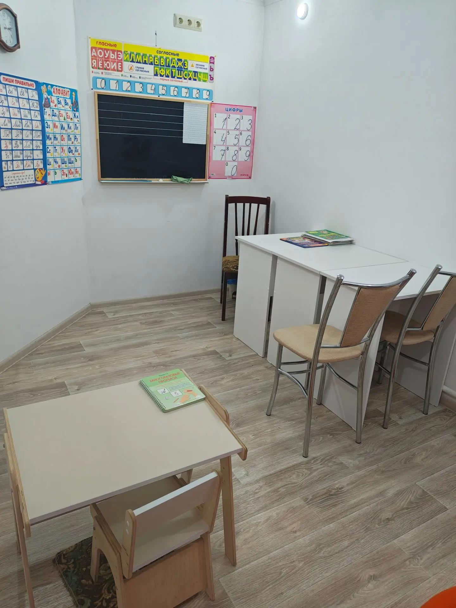
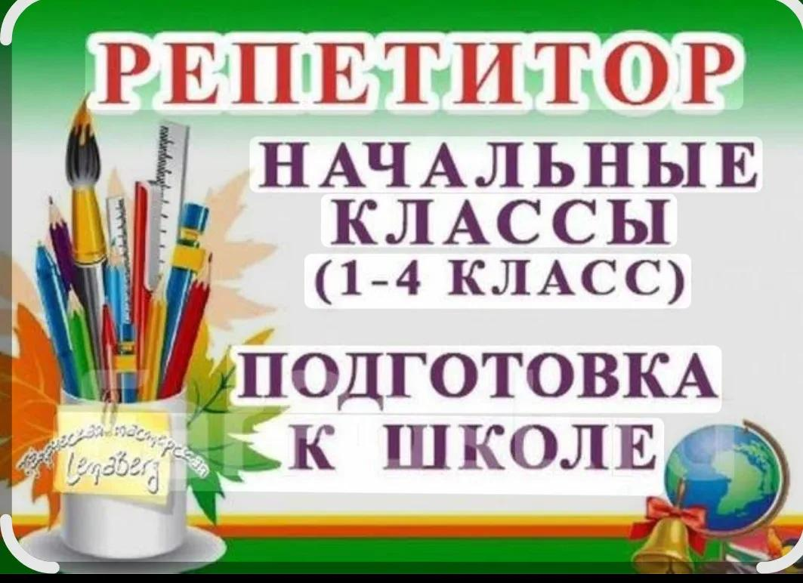

Форматы занятий
Онлайн-занятия (Zoom, Skype или любая удобная платформа)

Очные занятия (с. Айдар, ул. Кандыбина, д. 16)
Подготовка к школе • 1–4 класс • диагностика и коррекция
Обучение чтению и развитие речи, подготовка руки к письму, математика для малышей. Развитие памяти, внимания и усидчивости — чтобы ребёнок пришёл в школу уверенным.
Учу писать красиво и грамотно, исправляю почерк у школьников. Как дефектолог провожу коррекционные занятия по профилактике и преодолению дисграфии и дизорфографии.
Обучаю чтению и скорочтению: скорость чтения учеников увеличивается в 2–3 раза. Убираю психологический барьер «читать сложно».
Подтягиваю русский язык и математику по программе начальной школы. Помогаю разобраться в непонятных темах и восполнить пробелы в знаниях.
Как дефектолог провожу диагностику и коррекционные занятия: развитие речи, фонематического слуха, внимания и мышления, профилактика дислексии.
Как учитель начальных классов готовлю к ВПР по русскому языку и математике в 4 классе: разбираем демоверсии, тренируем типовые задания, работаем над ошибками.
Как дефектолог провожу диагностику и коррекционные занятия: развитие речи, фонематического слуха, внимания и мышления. Отдельно — коррекция дислексии, дисграфии и дизорфографии.

Уважаемые родители!
Что входит в мои занятия:
Длительность занятия: 1 час.
Онлайн-занятия (Zoom, Skype или любая удобная платформа)

Очные занятия (с. Айдар, ул. Кандыбина, д. 16)
Выберите удобный день и время — запись подтвердится автоматически.
Первое занятие начинается с диагностики — выявляю сильные стороны и пробелы в знаниях ребёнка, даю рекомендации родителям.
На основе диагностики составляю персональный план занятий с учётом темпа и особенностей ребёнка.
Использую интерактивные материалы и игровые задания — даже дистанционные занятия проходят активно и интересно.
Регулярно информирую родителей о прогрессе ребёнка, даю домашние задания с объяснениями.
13 лет работы в школе, среднее и высшее педагогическое образование, опыт дефектолога.
Работаю в онлайн-школе, знаю, как сделать дистанционные занятия эффективными и живыми.
Нахожу подход к каждому ребёнку, учитываю его интересы и особенности развития.
Улучшение успеваемости и чистая речь — главная цель наших занятий.
1500 руб/час
Первое диагностическое занятие — бесплатно (уточните, если не так)
Да. На занятиях по скорочтению скорость чтения учеников увеличивается в 2–3 раза. Отдельно работаю с психологическим барьером «читать сложно» — когда ребёнок боится читать вслух или считает, что у него не получается.
Да. Как дефектолог провожу коррекционные занятия по исправлению почерка и профилактике дисграфии. Работаем над правильным захватом ручки, наклоном, соединениями букв и темпом письма.
Я стараюсь заинтересовать каждого ребёнка, подбираю увлекательные материалы и игровые формы. Если ребёнок устал или потерял интерес, мы меняем вид деятельности.
Занятия включают артикуляционную гимнастику, упражнения на развитие фонематического слуха, постановку звуков и автоматизацию их в речи. Отдельно провожу коррекционные занятия по преодолению дислексии, дисграфии и дизорфографии. Длительность занятия — 1 час.
Опыт показывает, что онлайн-занятия для детей начальных классов так же эффективны, как и очные, при условии комфортной обстановки и поддержки родителей. Мы используем интерактивные доски и игры.